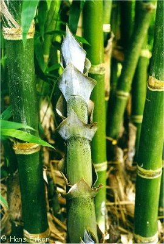

Bambusa tulda
Roxb.
Taxonomic Details

----- Correct Name
----- Classification
----- Synonyms
----- Common Names
Other Biological Details
----- Habit and Habitat
----- Diagnostic Features
----- Reproductive Biology
---------- Breeding System
---------- Phenology
---------- Pollinators
---------- Seed Biology
----------Seed Germination
------Cultivation
----- Major
Pests and Diseases
Economic Potential and Uses
----- Parts Used
----- Harvesting Practices
----- Produce and Products
----- Chemistry
----- Processing Techniques
----- Other uses
----- Economic Potential to the Country
----- Export Potential
Miscellaneous Information
Literature
Taxonomic Details
Correct Name
: Bambusa tulda Roxb.
Family : Gramineae
Synonyms :
Common Names :
English: Bamboo.
Hindi: Peka, Bans, Chau
Malayalam: Santal
Assami: Wamunna, wagi, nal-bans.
Back to Top
Other Biological Details
HABIT & HABITAT
An evergreen or deciduous, gregarious bamboo,with green or greyish-green culms,
20-70' high, and 2 .2-4.4" in diameter, very common in Assam, Bengal and
in the hill forests of Northern Circars. It extends eastwards to Burma.
Availability
:
Misc: nundydroog, South bank of Noa-Dihing, Sutnga, Vizagapatam, Forests & Forest
borders,
Country: Burma,India,
Zone: Central, East, North East, South,
State: Andhra Pradesh, Arunachal Pradesh, Assam, Bihar, Karnataka, Meghalaya,
Orissa, West
Bengal,
District: Champaran, Jowai, Uttar Kannada,
Status :
Back to Top
DIAGNOSTIC FEATURES :
An evergreen, tufted,
arboreous bamboo, often shedding leaves in drier districts,
the stems narrow fistulose, strong green, hardly glossy, the internodes 11/2 feet
long, the lowermost ones fibrous annulate at the joints, shoots green, glabrous,
their sheaths green, whitish powdered or almost pruinous, more or less thinly
covered with dark-brown appressed bristles on the margins indistinctly or almost
not ciliolate, the imperfect blade broadly ovate, cuspidate, coriaceous, erect,
minutely- retrarse hispid inside, decurrent in to a large purplish or yellowish
fringed contiguous or sinuately separated waved auricle, the ligule narrow, entire
leaves oblong to linear- lanceolate, 7-9 inch long 0.75-1.5 inch broad, short
petioled, with a rounded base, acuminate, glauscent and puberulous beneath, turning
rough, the 7-9 lateral nerves on each side conspicuous; sheaths glabrous or rarely
hairy on the back towards the apex, deciduously and long whitish fringed on the
minutely auricled produced mouth, auriculate, often fimbriate lobes at the base
of the short flat petiole. Panicle consisting of interrupted spikes, gradually becoming gigantic and radical
after the fall of the leaves. Spikelets clustered by 2 or 3 or many, 1-2.5inch
long, linear- lanceolate, acuminate, depressed supported by a few dry chartaceous
small bracts, the lower 2or 3 paleas gemmiparous, all the other hermaphrodite
or rarely one or the other of the lower ones male; rachille smooth, outer palea
of hermaphrodite flowers concave- oblong, acuminate, smooth and glassy green;
inner palea somewhat shorter, smooth, white fringed along the angles of the
2- keeled back; lodicules 3; long and tenderly fringed anthers yellow, almost
truncate or blunt; ovary obovate, white hispid on the apex.
Back to Top
REPRODUCTIVE BIOLOGY :
Breeding System :
Phenology:
Flowering cycle vary
from 30-60 years
Pollinators :
Seed Biology:
Seed Germination:
Cultivation:
Back
to top
Harvesting
Practices and yeild:
B. tulda from the U. S. A. was found to yield 46-0%
of unbleached pulp, or 43-6% of bleached pulp containing a-93-6% cellulose.
Back to Top
MAJOR PESTS AND DISEASES :
Economic Potential and Uses
Parts used
Plant, young shoots.
Produce and Products
Pickle, Mat and Basket
Back to Top
Chemistry
Plant gave
taxiphyllin,beta-sitosterol,campesterol,stigmasterol,4-bydroxybenzaldehyde and
amino acids including phosphoryl serine and asparagine.
Back to Top
Processing Techniques :
The culms
soaked in water for some weeks prior to their use last much longer &
stronger.
Back to Top
Other Uses
1.This is one of the most useful bamboos. Immersing
it in water, when it be-comes insect-resistant seasons it. It is largely used
in constructions, mat-making, toys, wall hangers, wall plates, hats, food
grain container, basket-work, etc. The young shoots are pickled
and eaten.
2.B. tulda from the U. S. A. was found to yield 46-0%
of unbleached pulp, or 43-6% of bleached pulp containing a-93-6% cellulose.
It is suitable for the manufacture of good- quality paper and also rayon.
Back to Top
Economical
Potential to the country
Export Potential:
Miscellaneous Information:
Back to Top
Literature
1.Bambusa
tulda, In Bamboos of India a compendium by K.K. Seethalaksmi & M.S. Muktesh Kumar
1998. Kerala Forest Research Institute Peechi 680653, Kerala, India. pp 79-83.
2.Kurtz.S.,1974, Forest flora of British Burma, Vol.II, M/S. Bishen Singh Mahendrapal
Singh publications, New Connaught Place, Dehra Dun. P 552.
3.Sasya
Sahyadri-A CD on
Plants of Western Ghats, 2003, K. N. Ganeshaiah.
4.The wealth of India, A
Dictionary of Indian Raw Materials and Industrial Products, Vol. I. A-B,
Publications and Information Directorate, CSIR, New Delhi, India, 1948.pp.
154.
Back to Top